Hausgemachtes Brot, guter Kaffee und Morgensonne an der Hohen Pforte.
Frühstück, Brunch und Mittagstisch mit Zutaten aus der Region, in einem kleinen, von Frauen geführten Café mitten in der Kölner Innenstadt.
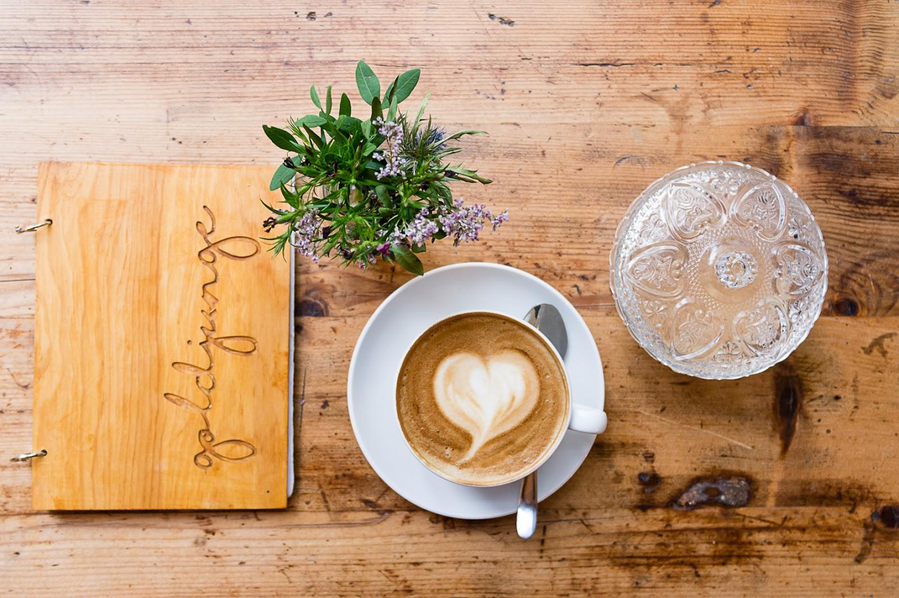
Was bei uns auf den Tisch kommt
Brot, Marmelade und Aufstriche machen wir selbst. Eier, Käse und Gemüse kommen von Erzeugern aus der Region, mit Blick auf das Tierwohl.
-
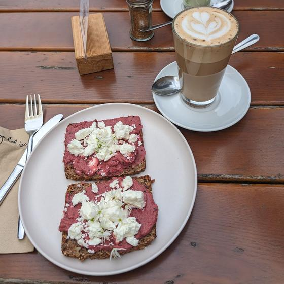
Stramme Leonie
Kräftiges Vollkornbrot mit Rote-Bete-Creme und Feta, auf Wunsch mit Spiegelei und Bacon.
vegetarisch -
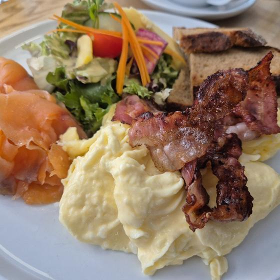
Rührei mit Lachs
Cremiges Rührei, Räucherlachs, knuspriger Bacon, frischer Salat und unser Brot.
-
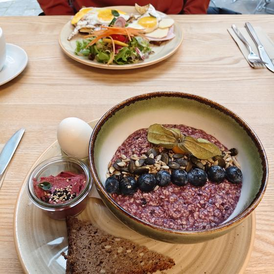
Porridge
Warmer Haferbrei mit Blaubeeren, Physalis und gerösteten Kernen.
vegan möglich -
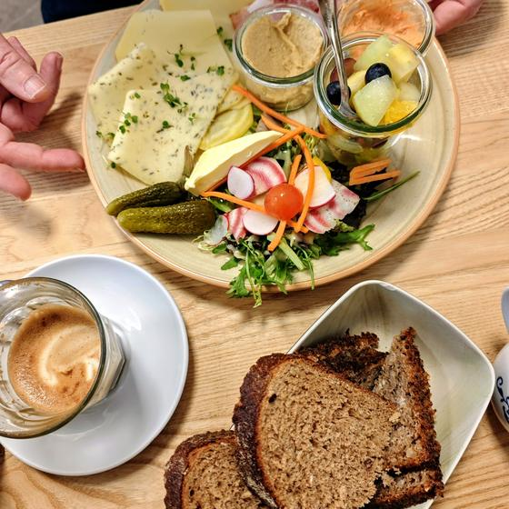
Frühstück zum Teilen
Käse, hausgemachte Aufstriche und Marmelade, Gemüse, Obst und frisches Brot.
vegetarisch -
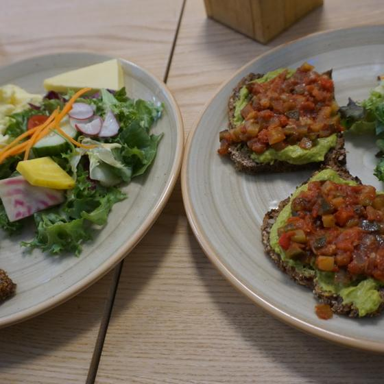
Avocado-Stulle
Vollkornbrot mit Avocado und Tomaten-Salsa, dazu ein kleiner Salat.
vegan -
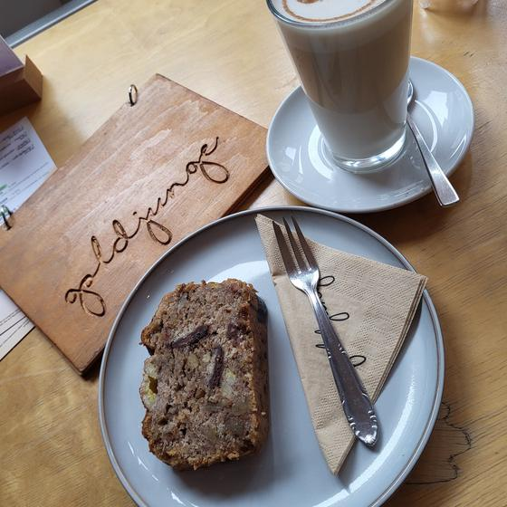
Kuchen aus eigener Backstube
Jeden Tag frisch gebacken, mal mit Obst, mal mit Schokolade. Passt zu jedem Kaffee.
Außerdem auf der Karte: die Stulle David, das kleine Frühstück Marie & André, Bowls, Matcha mit Fruchtpüree, frisch gepresster Orangensaft und eine große Auswahl an Tees. Die vollständige Karte mit Preisen liegt im Café aus.
Tisch reservieren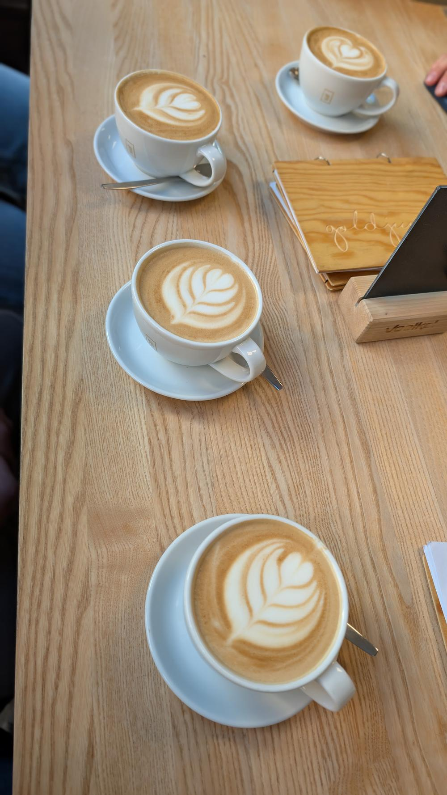
Jetzt im Winter
In der kalten Jahreszeit gibt es unsere Saison-Lattes. Mit Haferdrink auf Wunsch.
- Spekulatius-LatteEspresso, Milch, Gewürzkeks
- Bratapfel-Lattemit Zimt und Apfel
- Zimtschnecken-Lattepasst zur warmen Zimtschnecke
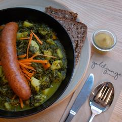
Mittags an kalten Tagen auch mal deftig: Grünkohl mit Mettwurst, Senf und Brot.
Klein, ruhig und mitten in der Stadt
Goldjunge ist ein kleines Café an der Hohen Pforte in der Kölner Innenstadt. Drinnen gibt es Holztische, eine Siebträgermaschine und Platz zum Reden. Draußen scheint vormittags die Sonne auf unsere Terrasse.
Viele kommen zum Frühstück, manche bleiben mit dem Laptop bis zum Nachmittag. Beides ist willkommen.
- Terrasse
- Vormittags in der Sonne
- Kostenloses WLAN
- Ruhig genug zum Arbeiten
- Barrierefrei
- Rollstuhlgerechter Eingang und Sitzplätze
- Bezahlen
- EC-Karte, Kreditkarte und mobil
- Zum Mitnehmen
- Kaffee und Kuchen auch to go
- Für alle
- LGBTQ+-freundlich, Gruppen willkommen
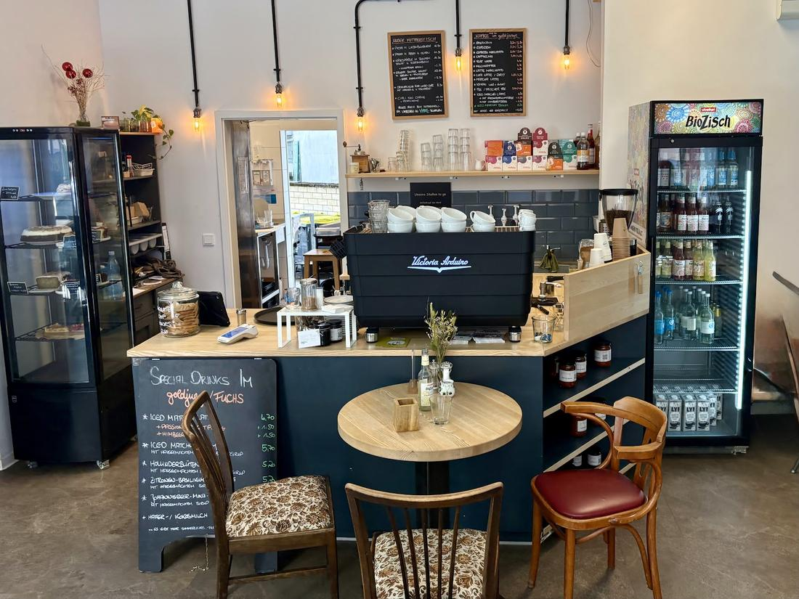
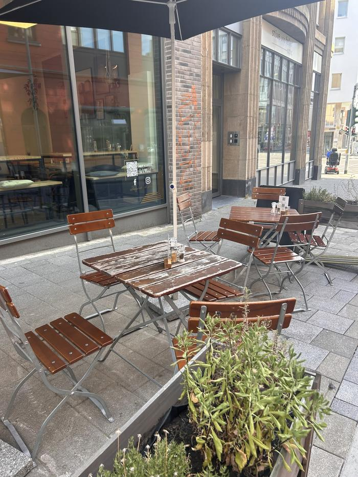
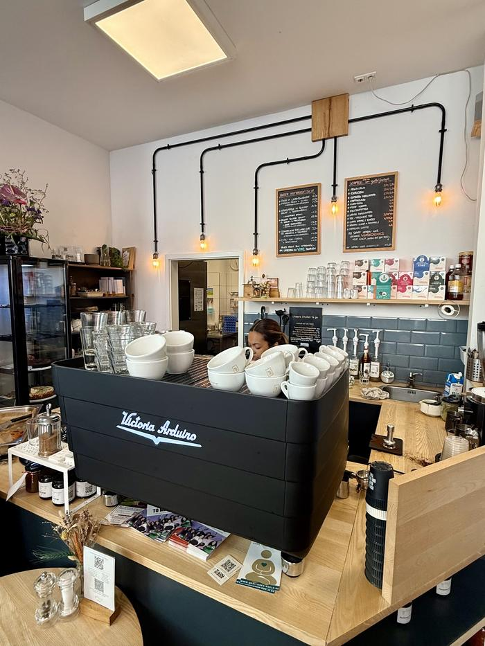
Was unsere Gäste sagen
Alles aus der Region unter Berücksichtigung des Tierwohles. Mit dem frisch gepressten O-Saft hat man die Sonne quasi im Glas.
Holger H., Oktober 2026 Das Croissant war mega knusprig und gleichzeitig schön fluffig, zusammen mit Rührei, Lachs und Käse einfach top.
Daniel A., April 2026 Ein absolutes Lieblingscafé! Die Auswahl an Matcha-Variationen ist hervorragend und mit viel Liebe zubereitet.
Radoslava L., Juli 2026
Besuch planen
Café GoldjungeHohe Pforte 4-6
50676 Köln
0221 71731443
| Montag | 8 bis 18 Uhr |
|---|---|
| Dienstag | 8 bis 18 Uhr |
| Mittwoch | 8 bis 18 Uhr |
| Donnerstag | 8 bis 18 Uhr |
| Freitag | 8 bis 18 Uhr |
| Samstag | 9 bis 18 Uhr |
| Sonntag | 9 bis 18 Uhr |
Am Wochenende ist der Brunch schnell ausgebucht. Ruf am besten vorher an, dann halten wir dir einen Tisch frei.
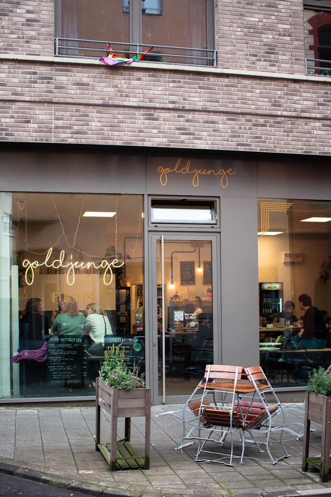